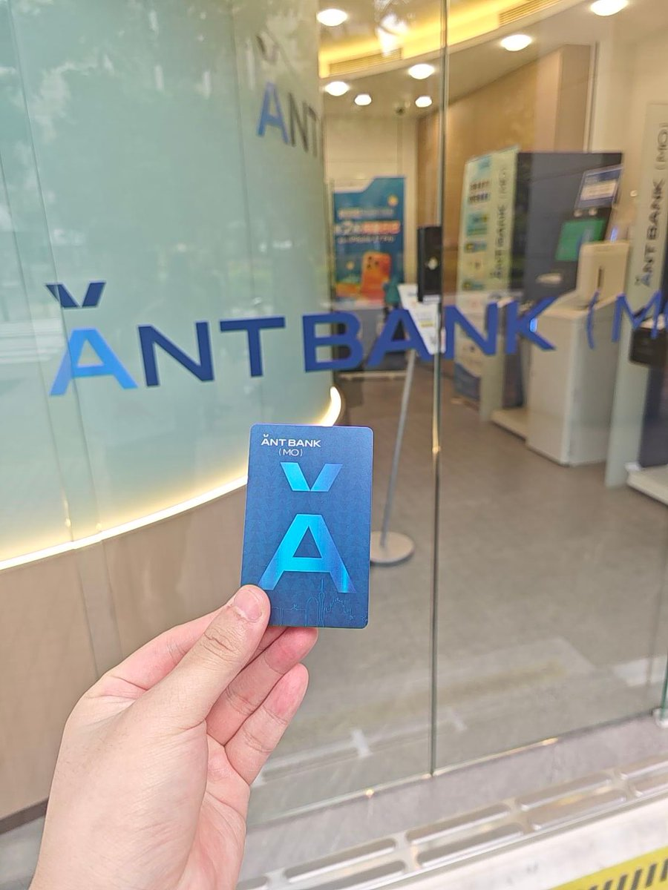
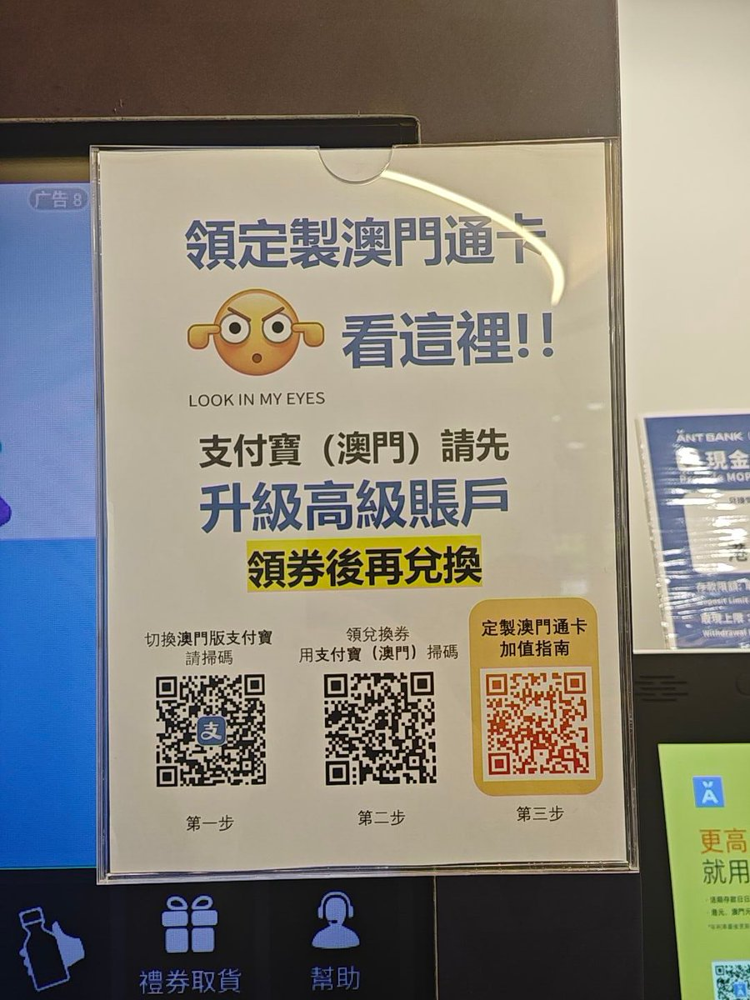

奶昔🥤
@realNyarime
今天中午朋友推荐后，顺便在澳门把蚂蚁银行申请了，秒下户！最后到蚂蚁银行（澳门）拿到了定制澳门通卡，好开心！
刚开始找了一圈支付宝也没有发现『切换版本』的功能，于是扫了ANT BANK的QR码，就可以切换了。然后满足要求后在卡券就可以凭码在银行的自助机领卡，还支持交通联合。
有没有推友介绍下这个要怎么用，储值是还要绑定mPay（澳门通）吗？还是说直接往蚂蚁银行（澳门）里存钱，就可以在内地和澳门坐公交了？

